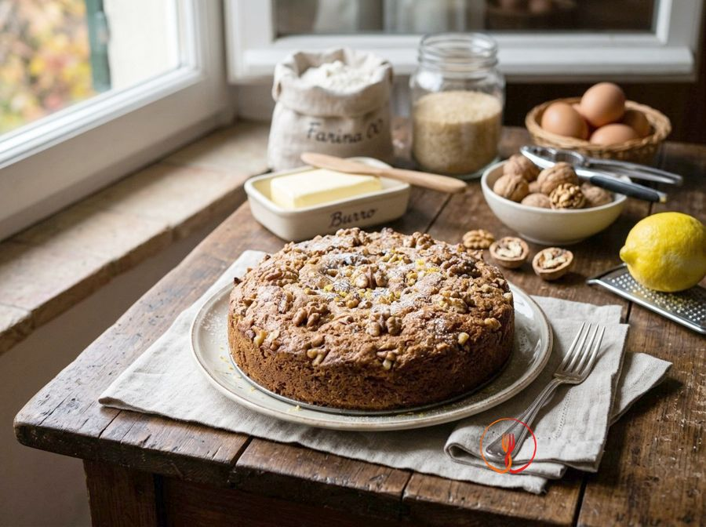

Walnut Cake
A very popular autumn cake
Ingredients
- All-purpose flour125 g
- Butter125 g
- Sugar250 g
- Walnuts100 g
- Eggs3
- Lemon1
- SaltA pinch
Allergens
None of the 14 main allergens in the ingredients.
Method
- Coarsely blend the walnuts and set them aside
- In a bowl, put the flour, sugar, butter, and eggs and blend everything
- Add the lemon zest, walnuts, and a pinch of salt and mix everything
- Pour the mixture into a 26 cm diameter baking pan
- Bake at 180 degrees for 20-25 minutes
- Let it cool, remove it from the pan, and dust with powdered sugar.
Open the recipe in the app for the shopping list, ingredient sheets and nearby shops.